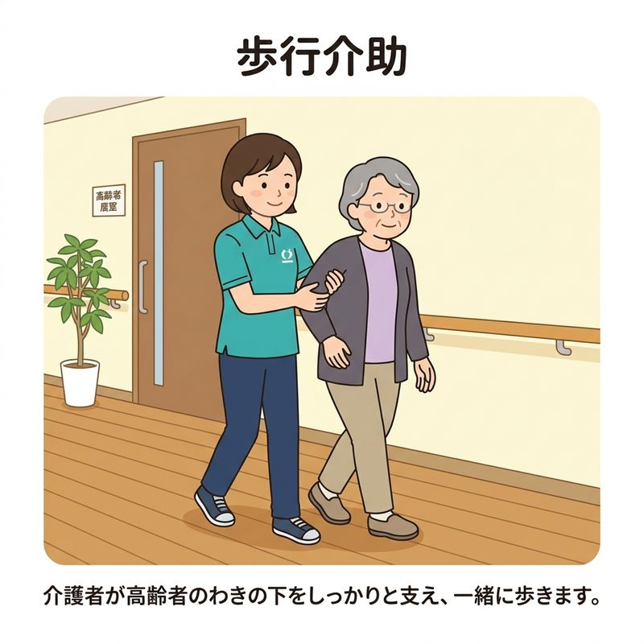
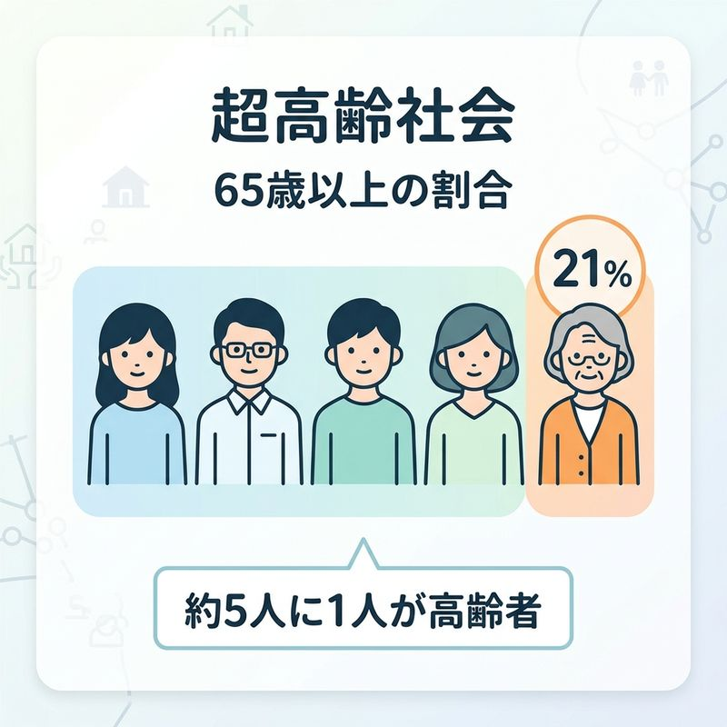

中学家庭（高齢者と共生）
単元6: 高齢者との関わりと共生
急速に高齢化が進む日本社会において、高齢者の心身の特徴を理解し、正しくサポートするための知識を整理します。介助の基本的な動作手順や、超高齢社会における地域での支え合い（共生）について学び、テスト対策を万全にしましょう！
1. 高齢者の身体的特徴と加齢変化
加齢（歳を重ねること）に伴い、高齢者の身体には様々な変化が起こります。
- 呼吸器系の変化：肺の伸縮性が低下し、肺活量が少なくなるため、少しの運動でも息切れが起こりやすくなります。
- 感覚器系の変化：視力や聴力の低下、三半規管の衰えにより、めまいやふらつきが起こりやすくなり、転倒しやすくなります。
- 骨・筋肉の変化：骨密度が低下するため、軽い転倒でも骨折しやすくなります。筋力や関節の柔軟性も低下します。
2. 介助（介護）の基本技術
高齢者の動作をサポートするときは、高齢者自身の残っている力（残存能力）を活かし、体に無理な負担をかけないようにします。実技手順の穴埋めでよく出題されるポイントです。
① 立ち上がり介助
- 高齢者が椅子やベッドから立ち上がるのを手伝う際、腕を持って力任せに引っ張り上げないことが重要です。引っ張ると肩の関節を脱臼したり、バランスを崩して危険です。
- 正しい方法：高齢者に少し前かがみになってもらい、お尻が浮きやすくなるようにサポートし、体を下から支えるようにしっかりと抱えて立ち上がらせます。
② 歩行介助（ほこうかいじょ）
- 高齢者の歩行を横から支えるときは、高齢者の手首や肩ではなく、わきの下を手で支えるようにして、体の重心を安定させます。
- 歩行ペースは介助者ではなく、常に高齢者の歩幅やスピードに合わせます。

わきの下を支える歩行介助の基本
3. 高齢社会と地域の「共生」
① 超高齢社会の現状
- 超高齢社会（ちょうこうれいしゃかい）：全人口に占める高齢者（65歳以上）の割合が21%（約5人に1人）以上になった社会。日本はすでにこの超高齢社会に達しています。
- 💡 7%以上 ➔ 「高齢化社会」、14%以上 ➔ 「高齢社会」、21%以上 ➔ 「超高齢社会」と段階的に呼び名が変わります。テストでの数字と名称の対応は必須暗記です。

65歳以上人口が21%以上の「超高齢社会」
② 地域共生社会の実現
- 共生（きょうせい）：子ども、高齢者、障害のある人、外国籍の人など、様々な世代や背景を持つ人が地域社会で互いに尊重し合い、支え合って共に生活をつくっていくこと。
- SDGs（持続可能な開発目標）：2015年に国際連合で採択された、誰一人取り残さない持続可能で多様性のある社会を作るための17の国際目標。
🔥 定期テスト対策・暗記のコツ
① 介助動作の禁止ワード
立ち上がり介助で「力任せに引っ張らない（抱えて起こす）」、歩行介助で支える部分は「わき」。これらのキーワードは実技問題の穴埋めで頻出です。
② 超高齢社会の「21%」という数字
「65歳以上が21%以上」で超高齢社会です。約5人に1人という割合と結びつけて暗記しましょう！
③ 共生社会の定義
「様々な世代や背景を持つ人々が、支え合って共に生活をつくっていくこと」を漢字2文字で「共生（きょうせい）」といいます。記述問題での解答ワードになります。